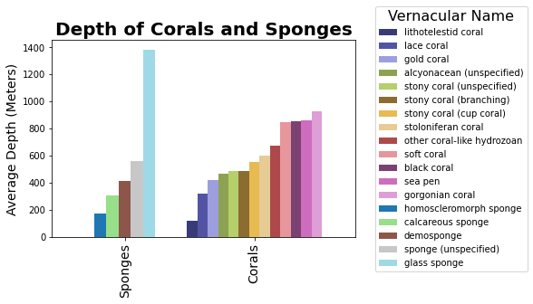
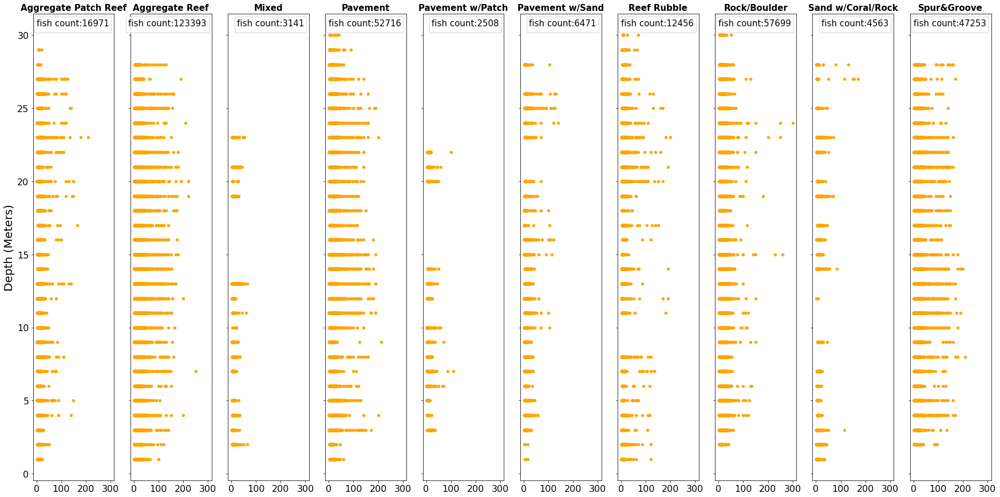

The following provides a summary of the analysis done on deep-sea reefs and Hawaiian Island fish habitats.
Deep-Sea Reef Analysis:
Figure 1. Which of the deep sea corals and sponges are the most prevalent? Which are the least prevalent? The National Centers for Environmental Information break the corals and sponges in their deep sea coral dataset into 18 categories. By examining the the above pie chart, one can observe that the gorgonian coral is the most prevalent among the categories, accounting for 32% of all documented deep sea corals and sponges. Among the least prevalent are alcyonacean (a broad category encapsulating unspecified types of corals), calcareous sponges, gold coral, homoscleromorph sponges, lithotelestid coral, coral-like hydrozoans, and stoloniferan coral, which together make up only one percent of all corals and sponges, as denoted by the "other" category in the figure.
Figure 2. Are corals or sponges found at greater depths? Which of the corals and sponges are found in deeper waters, and which are found in shallower waters? Sponges and corals often look similar due to their colonizing nature and the fact that they are both among the most diverse ecosystems on the planet, however they are actually very different animals. Sponges belong to the Phylum Porifera, while Corals belong to the Phylum Cnidaria. This figure illustrates the average depth that each deep sea animal has been found at. With the exception of glass sponges, which tend to live at depths of over 1300 meters, and lithotelestid corals, which are primarily found in depths of less than 100 meters, most sponges and corals are found at depths between 300 and 900 meters.
Figure 3. Have people become more interested in discovering reefs over the years? The scattered points on this graph show the number of corals discovered each year from 1920 to 2020. The regression line makes it clear that the discoveries are primarily increasing exponentially from year to year. While it might be hard to see clearly from the scattered points, the regression line shows that, even in the years 1920 through 1990, the amount of discoveries made is increasing exponentially. Beginning in the year 2000, it is very clear that the number of discoveries is increasing exponentially with each year, the highest number being in 2017 with 53,286 discoveries. This could be evident of the advancements of technology, but it also could indicate a growing interest in corals and sponge reefs. The biodiversity found within coral and sponge reefs is only of interest because their colorful and diverse ecosystems, but also due to the fact that they are important to human society: they provide coastal protection, fishery sources, potential for medical advancement, and have economic impacts as they are a source of recreation (Value of Corals, n.d.).
Figure 4. Were there any periods where the discoveries of corals and sponges sagged, relative to other times? This line chart shows the cumulative sum of the corals and sponges from the last 100 years. In other words, the y-axis is indicative of the total number of corals for any given year, as opposed to how many corals were discovered for any given year (which is what the previous graph shows). In the previous graph (Figure 3), it was difficult to see the exponential growth of reef discoveries in years before 2000. By having a log scale on the y-axis in this graph, however, it is clear that there was substantial growth in discoveries of reefs during earlier years, as shown in areas with a steeper slope. In addition, there are some places where the slope of the line is not as steep, which shows spans of time where not many reefs were discovered. Spanning from 1940 to 1960, and from 1970 to 2000, are among the most notable years when the number of reef discoveries were lower relative to other years.
Hawaiian Fish Habitat Analysis:
Size and Depth of Hawaiian Fish By Habitat Type
Size (cm)
Figure 5. Is there a relationship between the size of fish and the depth at which they are observed? Many conclusions can be made from the above scatter plots. These plots represent the relationship between the size of the fish and the depth at which it was observed, while also considering the type of habitat the fish reside in and the number of fish in each of those habitats. To start, the relationship between the size of the fish and the depth at which they are found was surprising. There doesn't seem to be much correlation between the size of the fish and the depth at which they were found, despite the fact that one might think that larger fish would be found at greater depths, which doesn't seem to be the case. Instead, it seems that even a Giant Manta and a Whitetip Reef Shark at 200 cm long have been observed at depths of only 4 meters in the pavement and aggregate reef habitats, respectively. In addition, the difference in the number of points in each scatter plot can be noted. The aggregate reef habitat type is the home to the largest number of fish by far, having 123,000 fish observed and the next closest being the pavement habitat type, with 50,000 fish observed. This can be explained by considering the prevalence of different types of habitats. "Most reefs that do not obviously fall in other types are recorded as Aggregate reefs" (Ayotte 2015). So it is not surprising that the Aggregate Reef is the most prevalent. The next most prevalent is pavement, or more specifically, limestone pavement: "Shallow water benthic habitats in the Hawaiian Islands are dominated by a variety of substrate types ... including broad expanses of limestone pavement" (Battista et al 2007). Limestone is often composed of fragments of marine organisms like coral (which is present in high numbers, as Figure 9 shows), so the prevalence of this type of habitat is intuitive.
Figure 6. What is the best time of year to see high numbers of fish near the Hawaiian Islands? This scatter plot illustrates the number of fish seen in Hawaii's reefs on given days in the months June through October in the years 2013 to 2017. It can be observed that this fish study took place during slightly different time periods each year. Most notably is the fact that nearly half of the 2015 study took place between day 160 and day 180 (the month of June), and there was a significantly higher number of fish observed during this time than any other month or year of the study. In the other four years, never was the amount of fish seen in one day higher than 1300; in June of 2015, the number of fish seen exceeded that number on eight different days, with the count for some days reaching as high as 1700 or more. This could be indicative of the best time of year to study the fish near the Hawaiian Islands: the most fish can be seen in the month of June. While there is still a chance for high amounts of fish to be seen between day 200 and 240 (July and August), it seems to be more hit or miss, with some days reaching 1200, and some days only at about 100 fish observed. In addition, though there is less data from this time period, day 250 through 270 (the month of September) have consistently high numbers, with the counts being between 400 and 1100. The number of fish seen near day 300 (the month of October) is not the lowest of all the months, but from the small amount of data for that month, don't seem to be very high, since it never exceeds 700 fish seen in one day. One might infer, then, that June would be the best month to study fish near the Hawaiian islands, September the next best month, July and August being the next best, and October being the last resort.
Figure 7. How has the number of fish that can be observed near the Hawaiian Islands changed throughout the years? This line chart shows the relationship between the number of fish at each main island in Hawaii and the year they were sighted. Most clearly, it can be observed that Hawaii has consistently had the most fish sightings of all the islands, with about 9,000 sightings in 2015. This makes sense, because Hawaii accounts for nearly 63% of the entire state, which also means it has a more coastal area in order to observe fish (Beal, 2009). The lines on the graph also show how the number of fish sighted has changed over the years. Somewhat surprisingly, the counts seem to be largely the same or even less than what they were in 2013, compared to 2016. There is a slight spike in the numbers for 2015 for the islands of Hawaii, Ni’iau, and Moloka’i, but otherwise, counts seem to be dropping. Perhaps this is due to changes in the study throughout the years, where some years there were simply more days that people decided to go to observe the fish.

Figure 8. What are the most prevalent fish types that have been observed near the Hawaiian Islands, and where have they been seen? While thousands of different kinds of fish have been observed off the coasts of the Hawaiian Islands, there are some kinds of fish that have been seen in higher quantities, namely, the Brown Surgeonfish, the Manybar Goatfish, the Saddle Wrasse, and the Spotted Surgeonfish. This map shows where these fish have been spotted. For example, one can see that only the Saddle Wrasse and the Brown Surgeonfish have been seen off the coast of Ni'iau, whereas all four of these common fish have been seen off the coast of Hawaii's main island.
Bringing it together:
Figure 9. What types of coral reefs have been discovered near the Hawaiian Islands, and where are they located? This geographical map of Hawaii displays the location of all the corals and sponges in this region. From this map, it can be detected that the sea pen, the stony coral, and unspecified sponges are the most prevalent in this region. It is also evident that the islands of O'aju, Moloka'i, Maui, and the other small islands near them are where the majority of Hawaii's reefs can be found. Surprisingly, there are less reefs near the main island of Hawaii, despite the high numbers of fish that have been observed there, as discovered in Figure 7.
Coral and Sponge Discoveries Over Time
Figure 10. Where and how has the number of known corals increased over the years? This animation shows each reef discovery from 1833 to 2019, and where the discovery was made. In the past 200 years, nearly a million corals and sponges have been discovered. Scientists estimate that there are another one to eight million different species of organisms living in undiscovered reefs around the world. The intrinsic value of these reefs are self explanatory: every species in itself has value, regardless of the human benefits it might provide. Besides that, however, the reefs are the homes to some of the most diverse ecosystems in the world. These ecosystems are so complex that even small changes can cause them to break down, which could eventually lead to the extinction of the many species that live within them. That being said, the biodiversity that these reefs provide are also directly valuable to humans in other ways, whether it be for the purposes of recreation, medical advancements, food, or coastal protection. Coral reefs are important in many ways, and it is our responsibility as stewards of this world to care for these diverse ecosystems.